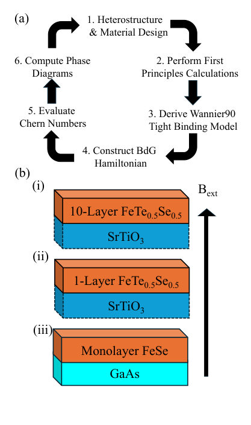
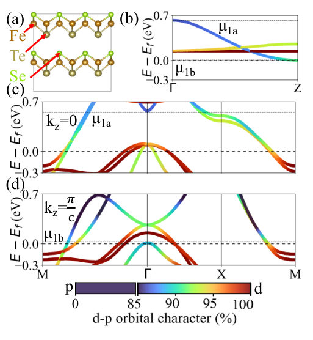
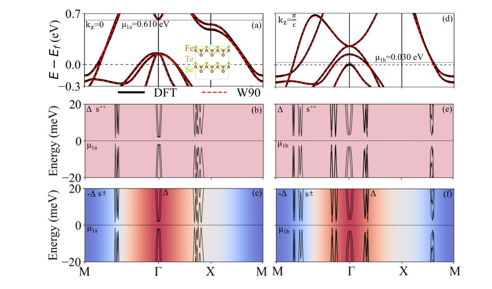

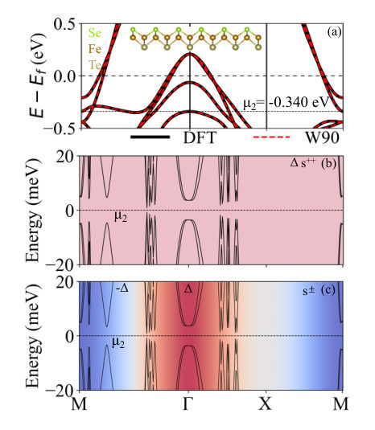
Authors: Christopher L. Jacobs, Baishali Mandal, Taehwan Jung, Purna P. Paudel, Jason Kawasaki, Tudor D. Stanescu, Subhasish Mandal
Type: theory · Category: other · PDF: https://arxiv.org/pdf/2609.10381v1
Analysis basis: full PDF text, analyzed in chunks
Topic relevance: analog quantum simulation 2/5 · Keldysh / 2PI / non-Gaussian methods 1/5




Summary. This paper introduces a comprehensive, first-principles computational framework to study topological superconductivity in realistic materials. By integrating DFT, Wannier models, and BdG theory, the authors successfully predict TSC in Fe-based superconductors and heterostructures. This work provides a quantitative, materials-by-design pathway for engineering candidate platforms for Majorana physics.
Why it may be interesting. While focused on condensed matter, the development of a rigorous, multi-scale computational framework that links electronic structure (DFT) to topological invariants (Chern number) is highly relevant for modeling complex quantum phenomena in engineered quantum systems.
Main problem. The core problem is developing a unified, materials-informed computational framework to theoretically predict and understand topological superconductivity (TSC) in real-world materials.
Main result. The framework successfully predicts multiple topological superconducting phases in Fe-based materials, highlighting FeSe/GaAs heterostructures as particularly promising platforms for realizing TSC.
Method. The approach combines Density Functional Theory (DFT) for electronic structure, Wannier-based low-energy Hamiltonians, Bogoliubov-de Gennes (BdG) theory, and Chern number calculations.
Model / system. The study applies this framework to bulk-like and monolayer FeTeSe, and to FeSe/GaAs heterostructures, investigating both intrinsic and proximity-induced TSC.
Key observables. Topological gaps, topological invariants (Chern number), and the presence of robust Majorana zero modes (MZMs).
Important parameters / regimes. Chemical potential ($\mu$), Zeeman field ($V_z$), and the presence of Rashba-active states and strong superconducting pairing.
Assumptions / limitations. The framework assumes that the low-energy physics can be captured by combining DFT results into effective Hamiltonians, though challenges remain in fully self-consistently treating unconventional pairing.
Figures summary. Figure 1(a) illustrates the complete multiscale workflow, connecting DFT calculations through Wannier-based models to the final topological invariant evaluations.
Paper structure. The paper follows a logical progression: first, establishing the need for a unified framework; second, detailing the combination of DFT, Wannierization, BdG theory, and topological analysis; and finally, applying this methodology to specific material systems like FeTeSe and FeSe/GaAs to derive design principles.
A microscopic understanding of topological superconductivity (TSC) in real materials requires a materials-informed approach that integrates first-principles electronic structure, superconductivity, and topology within a unified computational framework. Here, we develop such an approach by combining density functional theory, Wannier-based low-energy Hamiltonians, Bogoliubov-de Gennes theory, and Matsubara Green's-function-based Chern number calculations performed directly on realistic multiorbital superconducting Hamiltonians. We apply this framework to bulk-like and monolayer FeTeSe and to FeSe/GaAs heterostructures, enabling a unified investigation of both intrinsic and proximity-induced topological superconductivity. We identify key electronic-structure ingredients that promote robust TSC, including Rashba-active states near the Fermi level, strong induced superconducting pairing, and substantial orbital hybridization between spin-orbit-active and superconducting sectors. Guided by these design principles, we predict multiple topological superconducting phases in Fe-based materials and demonstrate that FeSe/GaAs heterostructures are particularly promising, exhibiting topological transitions at experimentally accessible chemical potentials and low Zeeman fields. Complementing the theoretical predictions, we demonstrate the growth and structural characterization of FeSe/GaAs heterostructures, establishing the experimental feasibility of the proposed materials platform. Our results provide a quantitative route for engineering and screening candidate Majorana materials and heterostructures directly from realistic electronic structures and establish a foundation for future materials-by-design approaches to topological superconductivity.
Authors: A. D. Levin, A. S. Jaroshevich, Z. D. Kvon, V. A. Chitta, M. S. Aksenov, D. V. Dmitriev, A. K. Bakarov, G. M. Gusev
Type: both · Category: other · PDF: https://arxiv.org/pdf/2609.10511v1
Analysis basis: full PDF text, analyzed in chunks
Topic relevance: Keldysh / 2PI / non-Gaussian methods 2/5 · methods for driven-dissipative 1/5
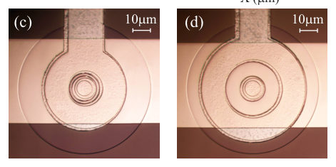
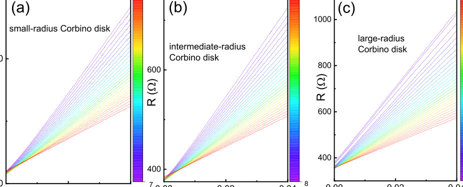
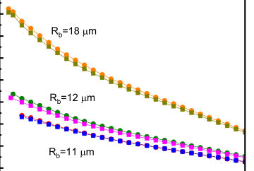
Summary. This work analyzes the magnetoresistance in GaAs Corbino devices using hydrodynamic theories to probe electron transport. By fitting the observed quadratic magnetoresistance to models incorporating finite-slip boundary conditions, the authors confirm that the signal is dominated by bulk viscous flow. This establishes the Corbino geometry as a powerful tool for studying bulk transport properties in 2DEGs.
Why it may be interesting. While focused on solid-state transport, the rigorous application of continuum hydrodynamics to electron flow, including boundary physics (finite slip), provides a detailed example of non-equilibrium transport modeling relevant to open quantum systems.
Main problem. The study investigates the origin of positive magnetoresistance observed in high-mobility GaAs Corbino devices by analyzing hydrodynamic magnetotransport effects.
Main result. The observed magnetoresistance is predominantly governed by the bulk hydrodynamic response, allowing Corbino geometry to serve as a complementary bulk-sensitive probe of viscous electron flow.
Method. The analysis employs hydrodynamic theories of magnetotransport, specifically modeling the crossover between diffusive and viscous regimes using finite-slip boundary conditions.
Model / system. The physical system is a two-dimensional electron gas (2DEG) in a GaAs Corbino geometry. The model incorporates hydrodynamic descriptions of current flow, accounting for momentum relaxation and viscous effects.
Key observables. Positive magnetoresistance exhibiting a quadratic dependence on the perpendicular magnetic field ($B^2$), and the temperature dependence of the magnetoresistance coefficient ($\alpha$).
Important parameters / regimes. The analysis distinguishes between the diffusive limit (momentum relaxation) and the hydrodynamic/Stokes limit (viscosity), and examines the quantitative modification due to finite-slip boundary conditions.
Assumptions / limitations. The analysis assumes the applicability of hydrodynamic theories and successfully separates the contributions from the bulk response, finite-slip boundary effects, and contact voltages.
Figures summary. Figures show magnetoresistance ($R$ vs $B^2$) for varying Corbino disk radii and temperatures, illustrating the dependence of the quadratic magnetoresistance coefficient ($\alpha$) on both radius and temperature.
Paper structure. The paper develops the theoretical framework by deriving the general magnetoresistance expression incorporating finite-slip boundary conditions, analyzing the limiting cases (diffusive vs. hydrodynamic), and finally applying this model to fit multiple experimental data sets simultaneously to constrain physical parameters.
We report the observation of positive magnetoresistance in high-mobility GaAs Corbino devices. Over a broad intermediate-temperature range, the resistance exhibits a quadratic dependence on perpendicular magnetic field. We analyze the data within hydrodynamic theories of magnetotransport in the Corbino geometry, which describe the crossover between the diffusive and viscous regimes, including finite-slip boundary conditions appropriate for current-penetrable contacts. The extracted relaxation rates are consistent with an approximately $T^2$ temperature dependence of the electron-electron scattering contribution. The extracted viscous relaxation parameters are consistent with those obtained from Hall-bar measurements. Comparison with theory indicates that the observed magnetoresistance is predominantly governed by the bulk hydrodynamic response, while finite slip modifies the Stokes--Ohm crossover quantitatively and the field-dependent boundary voltage provides a separate correction. These results show that Corbino magnetotransport can serve as a complementary bulk-sensitive probe of viscous electron flow.
Authors: Jong-Guk Choi, Avinash Kumar Chaurasiya, Jaimin Kang, Venkatesh Vadde, Peter G. Lim, Roman Khymyn, Ahmad A. Awad, Akash Kumar, Mark C. Hersam, Vinayak P. Dravid, Pedram Khalili Amiri, Johan Åkerman
Type: both · Category: other · PDF: https://arxiv.org/pdf/2609.10131v1
Analysis basis: full PDF text, analyzed in chunks
Topic relevance: analog quantum simulation 2/5 · driven-dissipative phase transition 1/5
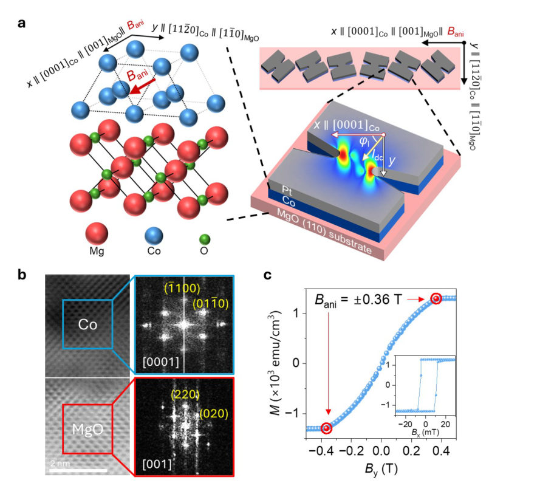

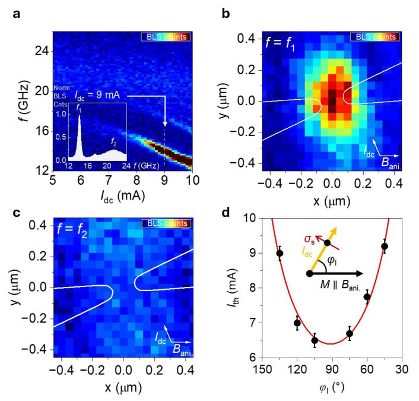
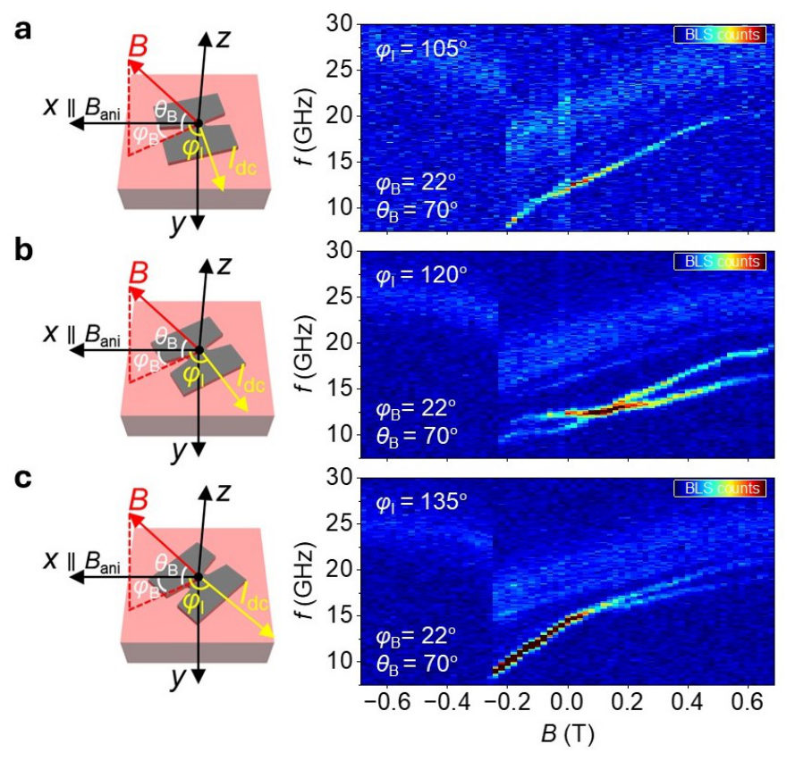

Summary. This work reports on the creation of highly functional spin Hall nano-oscillators (SHNOs) using epitaxial Co/Pt films. By leveraging the built-in crystallographic anisotropy, the devices achieve stable, high-frequency auto-oscillations without needing an external magnetic bias. Furthermore, the oscillation state can be nonvolatilely reconfigured, establishing a promising materials-based route for next-generation spintronic oscillators.
Why it may be interesting. While the core physics is in condensed matter spintronics, the concept of using intrinsic material symmetry (crystallographic anisotropy) to engineer a stable, bias-free operating point is analogous to engineering effective Hamiltonians or potentials in quantum systems, making it relevant for understanding engineered quantum control.
Main problem. The primary goal is to develop reconfigurable, field-free spin Hall nano-oscillators (SHNOs) to overcome the limitation of requiring a global external magnetic bias for operation.
Main result. The authors demonstrate that utilizing the intrinsic crystallographic anisotropy of epitaxial Co/Pt bilayers enables robust, field-free auto-oscillations above 10 GHz, with the oscillation state being nonvolatilely reconfigurable by the remanent magnetization.
Method. The study combines advanced experimental techniques, including Spin-Torque Ferromagnetic Resonance (STFMR) and micro-focused Brillouin Light Scattering ($\mu$-BLS), with micromagnetic simulations.
Model / system. The physical system is an epitaxial Co/Pt bilayer grown on MgO(110), patterned into nano-constrictions. The dynamics are governed by spin-torque effects interacting with the large, fixed anisotropy field derived from the crystal structure.
Key observables. Auto-oscillation frequency (>10 GHz), current-dependent microwave power spectral density, threshold current ($I_{th}$), and the degree of spectral synchronization between oscillation modes.
Important parameters / regimes. Crystallographic anisotropy field ($ ext{B}_{ ext{ani}} \approx 0.36 ext{ T}$), current angle relative to anisotropy axis ($\phi_I$), and the operating temperature/field (zero applied field).
Assumptions / limitations. The method relies on the assumption that the large crystallographic anisotropy is preserved after device fabrication, and that the auto-oscillation is spatially confined to the nanoconstriction region.
Figures summary. Figures show STFMR spectra confirming anisotropy fields, power spectral density demonstrating field-free auto-oscillations, and $\mu$-BLS maps illustrating the spatial confinement and the progressive merging (synchronization) of spectral branches as the current angle is tuned.
Paper structure. The paper details the experimental setup (device fabrication, measurement techniques like STFMR and $\mu$-BLS), presents the core findings regarding field-free oscillation enabled by anisotropy, and concludes by establishing this anisotropy as a general design principle for reconfigurable spintronic oscillators.
Spin Hall nano-oscillators (SHNOs) are nanoscale microwave sources for wireless communication, neuromorphic computing and oscillator-based Ising machines, but conventional devices require a global magnetic bias. Here we replace this bias through crystallographic anisotropy in epitaxial Co/Pt. Growth of hcp Co with its c-axis in the film plane produces an anisotropy field of about 0.36 T and enables field-free auto-oscillations above 10 GHz in nanoconstriction SHNOs. The active current polarity is selected by the remanent magnetization, providing nonvolatile reconfiguration of the oscillation state. Micro-focused Brillouin light scattering confirms that the nonlinear response is confined to the nanoconstriction region. Lithographic control of the angle between the current and anisotropy axes tunes the excitation threshold and drives two spectral branches from separated modes to a dominant single branch, consistent with mutual synchronization. These results establish epitaxial crystallographic anisotropy as a route to reconfigurable field-free spintronic oscillators and oscillator networks.
Authors: Shuang Shen, Milivoj R. Belić, Ce Shang, Yongdong Li, Yiqi Zhang
Type: theory · Category: other · PDF: https://arxiv.org/pdf/2609.09825v1
Analysis basis: full PDF text, analyzed in chunks
Topic relevance: interference shaping light 2/5 · analog quantum simulation 1/5
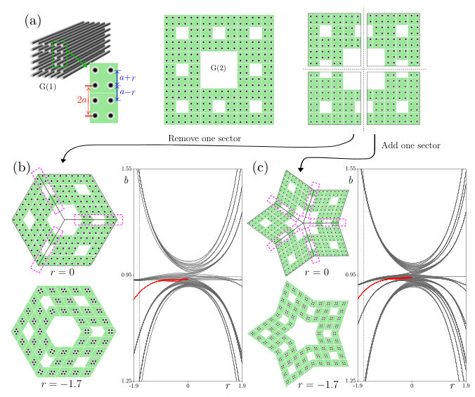
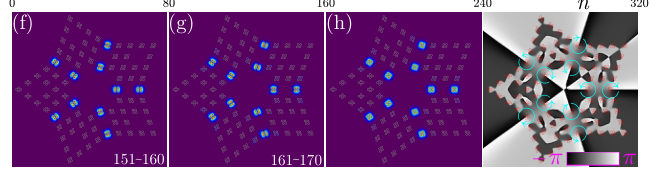


Summary. This paper investigates the stability of vortex solitons in nonlinear optical waveguides patterned with disclination-fractal structures. By comparing these fractal lattices to conventional defect structures, the authors prove that the fractal geometry provides a novel mechanism to stabilize these light field arrays. This has significant implications for designing advanced photonic devices capable of robust light field manipulation.
Why it may be interesting. This work provides a concrete example of how engineered geometric complexity (fractal geometry combined with defects) can stabilize nonlinear wave phenomena, offering insights applicable to designing robust photonic devices and understanding wave localization in complex media.
Main problem. The primary challenge addressed is achieving stable vortex solitons and vortex-soliton arrays within complex, geometrically structured nonlinear media.
Main result. The study demonstrates that vortex-soliton arrays in disclination-fractal configurations are significantly stable, while those in conventional disclination structures are unstable.
Method. The research employs linear stability analysis and direct numerical simulations of the nonlinear Schrödinger-like equation to track field evolution over long distances.
Model / system. The system models light propagation in waveguide arrays structured using disclination operations applied to fractal lattices (e.g., Sierpiński carpets). The dynamics are governed by a nonlinear Schrödinger equation incorporating diffraction, self-action, and geometric potential terms.
Key observables. Stability of the vortex-soliton array (measured by the growth rate of perturbations, Re(beta)), field mode maintenance, and phase coherence over propagation distance (z).
Important parameters / regimes. The structure type (disclination-fractal vs. conventional SSH), the topological phase (topologically trivial phase), and the nonlinearity strength are key parameters.
Assumptions / limitations. The analysis assumes the nonlinear effect is sufficient to counteract diffraction-induced broadening, allowing for the localization of stable soliton states.
Figures summary. Figures illustrate the construction of the fractal lattices, the comparison of spectral properties between fractal and conventional structures, and direct simulations showing stable propagation in the fractal case versus disintegration in the conventional case.
Paper structure. The paper progresses by first establishing the physical model and the challenge of instability. It then analyzes the linear spectrum, identifies stable domain wall states in the topologically trivial phase, and finally uses nonlinear simulations and stability analysis to rigorously compare the stability of the fractal vs. conventional lattice structures.
Vortex light fields carry orbital angular momentum and have attracted significant attention because of their wide applications in light field manipulations, optical communications, and quantum information processing. In nonlinear media, the balance between diffraction and self-action enables the formation of vortex solitons. However, achieving the stability of vortex solitons remains challenging due to radial and azimuthal modulation instabilities. Here, we report stable vortex solitons and vortex-soliton arrays in disclination-fractal configurations with different rotational symmetries, constructed by applying disclination operations to fractal lattice structures. The stable vortex-soliton arrays---composed of several vortex solitons---can exist along domain walls, resulting from the disclination operation applied to the topologically trivial phase. Their stability is verified through both linear stability analysis and direct simulations of perturbed propagation. For comparison, vortex-soliton arrays in conventional disclination configurations are found to be completely unstable, demonstrating the significance of the fractal configuration in stabilizing these nonlinear states. These findings reveal a new nonlinear excitation mechanism arising from the interplay between fractal geometry and disclination defects, thereby providing theoretical underpinnings for both the improved understanding of multi-field excitation phenomena in complex geometric systems and opening new avenues for the design of photonic devices based on fractal disclination structures.
Authors: Elias Paakkunainen, Bárbara Maria Oliveira Santos, Gabriel dos Santos, Timo Tarhasaari, Paavo Rasilo, Sebastian Schöps
Type: theory · Category: numerical methods · PDF: https://arxiv.org/pdf/2609.09347v1
Analysis basis: full PDF text, analyzed in chunks
Topic relevance: methods for driven-dissipative 2/5
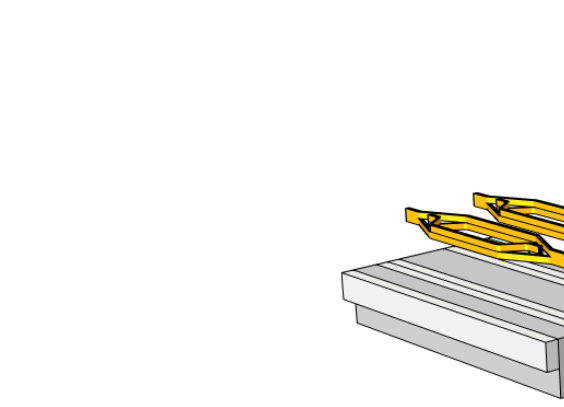


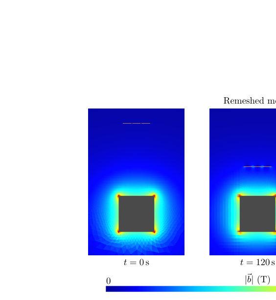
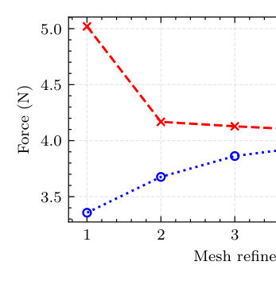
Summary. This paper introduces a fixed-mesh finite element method to simulate superconducting magnetic bearings, circumventing the computational bottleneck of remeshing required by traditional moving-boundary simulations. By incorporating motion effects into a time-dependent anisotropic material tensor, the model achieves high accuracy while drastically improving computational efficiency compared to reference methods.
Why it may be interesting. While the physics is classical electromagnetism, the core contribution is a novel, efficient numerical technique for time-dependent, moving-boundary problems in FEM, which has methodological relevance for complex simulations in quantum physics.
Main problem. The primary challenge is accurately and efficiently modeling superconducting magnetic bearings (SMBs) while accounting for the relative motion between the superconducting components and the magnetic guideway.
Main result. The proposed fixed-mesh approach accurately predicts levitation forces, matching experimental results with high $R^2$ values, while being significantly more computationally efficient than traditional remeshing methods.
Method. The authors developed a fixed-mesh finite element method (FEM) that models motion by applying a coordinate transformation only to the air region, incorporating this effect into a time-dependent anisotropic material tensor.
Model / system. The system modeled is a superconducting magnetic bearing involving High-Temperature Superconductors (HTS) interacting with a magnetic guideway. The formulation uses the j-a mixed FEM approach, coupled with homogenization techniques for coated conductors.
Key observables. Levitation force ($f_x, f_y$), magnetic flux density ($|\vec{b}|$), and current density distributions ($j/j_c$).
Important parameters / regimes. The model incorporates material parameters like critical current density ($j_c$) and resistivity ($ ho$) which follow power-law characteristics.
Assumptions / limitations. The core assumption is that motion effects can be captured by modifying material properties (via the reluctivity tensor) within a fixed mesh, thereby avoiding the computational cost of remeshing at every time step.
Figures summary. Figures compare the predicted levitation force against experimental measurements and reference models across various motion states (vertical/horizontal translation). Other figures illustrate the geometry and the comparison of flux density and current distributions between fixed-mesh and remeshed simulations.
Paper structure. The paper introduces the physical problem, details the fixed-mesh methodology (including the coordinate transformation and anisotropic tensor), presents the coupled FEM formulation (j-a), validates the approach against verification problems (convergence, known measurements), and finally applies it to complex SMB simulations, highlighting computational gains.
Numerical simulations of superconducting magnetic bearings (SMBs) are complicated by the relative motion between high temperature superconductors and the magnetic guideway, which commonly requires repeated updates of the geometry and mesh. We present a fixed-mesh based approach for modeling the motion induced effects in which a coordinate transformation is applied only to the air region between the moving regions. The transformation can be included in a time-dependent anisotropic material tensor, leaving the mesh during the simulation and the rest of the formulation unchanged. To provide numerical examples, the approach is implemented in 2D using the finite element method with the $j$-$a$ formulation and is combined with homogenization and circuit coupling for double-crossed loops of coated conductors. The open-source model implementations are made available. The proposed approach is verified and validated against existing modeling approaches and experimental results from the literature for SMBs. Two simulation examples are presented, and in both of them the levitation force predicted by the fixed-mesh model agrees with the experimental results, yielding $R^2$ values above 0.99. For a verification problem, it is shown that the fixed-mesh model converges towards the remeshed reference solution under mesh refinement as expected. For an SMB undergoing vertical and horizontal translations, the homogenized fixed-mesh model reproduces the lateral-force response of a fully resolved moving-geometry reference model. Additionally, the homogenized fixed-mesh model is computationally more efficient than the reference model, indicating a significant reduction in the number of degrees of freedom and the computation time. The results demonstrate accurate and computationally efficient simulation of translational motion with the fixed-mesh based approach.
Authors: M. Selch
Type: theory · Category: other · PDF: https://arxiv.org/pdf/2609.09505v1
Analysis basis: full PDF text, analyzed in chunks
Topic relevance: Keldysh / 2PI / non-Gaussian methods 2/5

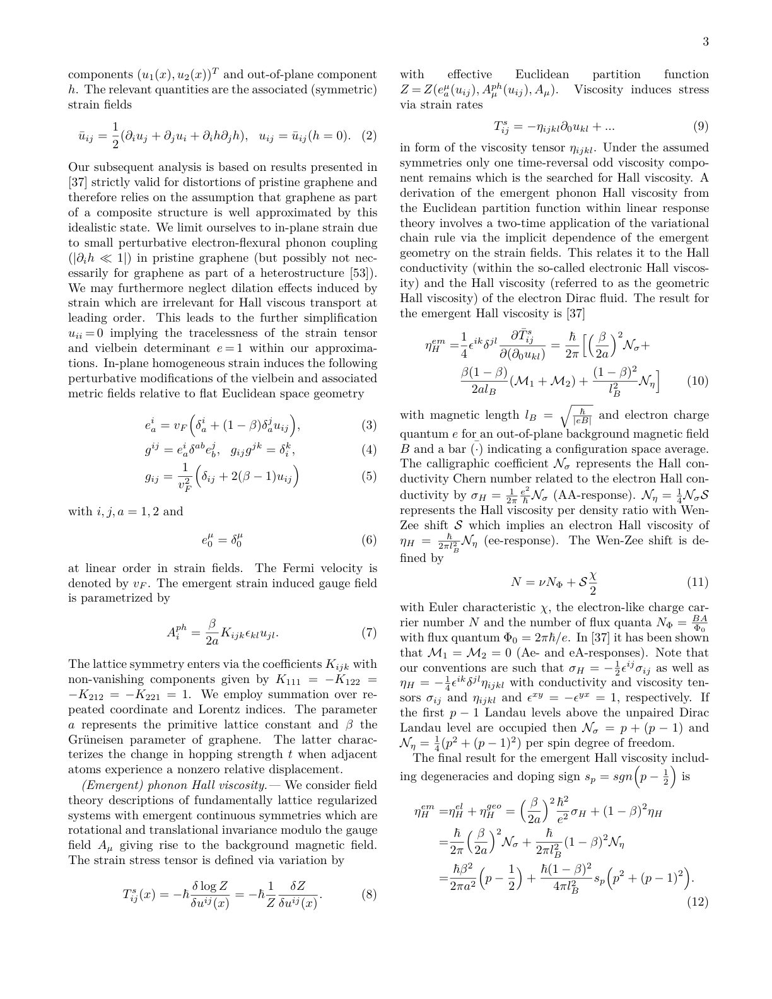


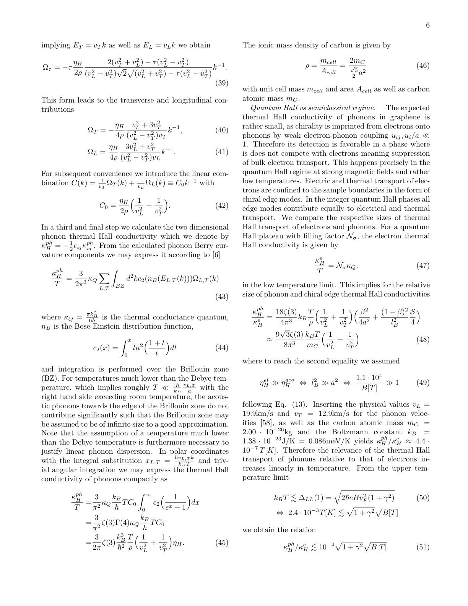
Summary. This theoretical work calculates the intrinsic thermal Hall conductivity of phonons in graphene operating in the quantum Hall regime. It shows that while the direct phonon contribution is small, the valley-specific thermal Hall response mediated by electron-phonon coupling is predicted to be significant. This provides a pathway to experimentally probe valley physics using lattice vibrations in 2D Dirac materials.
Why it may be interesting. The work connects topological concepts (Hall viscosity, Berry curvature) from electronic transport to lattice dynamics (phonons), providing a theoretical framework for measuring emergent topological responses in condensed matter systems.
Main problem. The paper calculates the intrinsic (valley) thermal Hall conductivity of phonons in graphene when bulk electron thermal transport is suppressed, specifically in the quantum Hall regime.
Main result. While the intrinsic phonon thermal Hall conductivity is predicted to be small, the valley thermal Hall transport induced by electron coupling is predicted to be comparable in size to the charge channel transport, suggesting a measurable valley response.
Method. The analysis uses effective field theory and linear response theory, deriving the phonon Hall viscosity by integrating out massive Dirac electrons coupled via geometric electron-phonon coupling.
Model / system. The system is graphene, modeled using a Dirac fermion formulation for electrons coupled to lattice distortions (phonons). The analysis is performed in the quantum Hall regime, treating the coupling perturbatively.
Key observables. Phonon (valley) thermal Hall conductivity ($\kappa_{ph}^H$, $\kappa_{ph}^{vH}$), Phonon Hall viscosity ($\eta_{ ext{em}}^H$), and the ratio $\kappa_{ph}^H / \kappa_e^H$.
Important parameters / regimes. Quantum Hall regime, low temperature ($T o 0$), and the magnitude of the electron-phonon coupling ($\partial_{ih}$).
Assumptions / limitations. The analysis assumes graphene can be approximated by its pristine state and relies on low-temperature approximations for the phonon dispersion relation.
Paper structure. The paper progresses from establishing the general framework for phonon Hall viscosity induced by electronic Hall effects, deriving the necessary effective actions, and finally calculating the specific intrinsic and valley contributions to the thermal Hall conductivity.
We calculate the intrinsic contribution to the (valley) thermal Hall conductivity of phonons in (Semenoff-gapped) graphene in the quantum Hall regime where bulk electron thermal transport is suppressed. The (valley) thermal Hall transport of phonons considered here originates from a phonon (valley) Hall viscosity induced by electron (valley) Hall conductivity and viscosity via geometric electron-phonon coupling. The so generated phonon (valley) Hall viscosity is identified with the emergent (valley) Hall viscosity recently introduced in \textit{Phys. Lett. A} \textbf{595}, 132096 (2026). While our calculations refer to graphene, they may very well be generalized to other Dirac materials like group-VI transition metal dichalcogenides. We discuss the prospect of measuring the phonon thermal Hall conductivity in graphene-based heterostructures and estimate the corresponding valley response induced by electrons in the inversion symmetry broken phase.
Authors: Anmol Lamichhane, Adam Denchfield, Hyeondeok Shin, Panchapakesan Ganesh, Russell J. Hemley, Hyowon Park
Type: theory · Category: strongly correlated electrons · PDF: https://arxiv.org/pdf/2609.09446v1
Analysis basis: full PDF text, analyzed in chunks
Topic relevance: Keldysh / 2PI / non-Gaussian methods 2/5
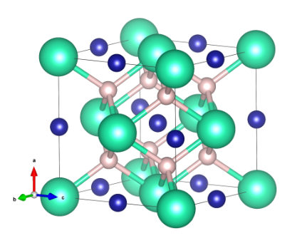


Summary. This theoretical study investigates the electronic structure of superconducting Lutetium hydrides, focusing on the origin of observed flat bands. Using advanced many-body techniques, the authors determine that the physics is governed not by the strength of electron correlation, but fundamentally by how the hydrogen orbitals are filled at specific crystallographic sites. This establishes orbital filling as the key determinant of electronic properties in these materials.
Why it may be interesting. The detailed analysis of correlation effects in a strongly correlated material system, using advanced many-body techniques like DMFT and cRPA, provides a model for understanding how orbital filling dictates electronic behavior, which is relevant to correlated electron physics in general.
Main problem. The study aims to uncover the microscopic origin and correlation nature of puzzling flat-band regions observed in superconducting Lutetium hydrides ($ ext{LuH}_x$) where superconductivity and flat-band physics intersect.
Main result. The authors find that hydrogen orbital filling, rather than the magnitude of the Coulomb interaction, is the fundamental principle governing correlation strength and low-energy flat-band physics in these materials.
Method. The research employs a combination of Density Functional Theory (DFT), Dynamical Mean-Field Theory (DMFT), and the Constrained Random-Phase Approximation (cRPA) to analyze electronic structure and correlation effects.
Model / system. The system under investigation is the series of Lutetium hydrides ($ ext{LuH}_x$, $1.75 \le x \le 3$), which exhibit superconductivity under pressure and possess distinct tetrahedral and octahedral hydrogen sites.
Key observables. Screened on-site Coulomb interaction, correlation strength (mass enhancement, susceptibility), Density of States (DOS), flat-band features, and low-energy optical absorption peaks.
Important parameters / regimes. Hydrogen orbital filling, the relative energy levels of $ ext{H-s}$ vs. $ ext{Lu-d}$ states, and the degree of hybridization between the two sublattices.
Assumptions / limitations. The analysis assumes that anti-site defects (H in octahedral sites) are responsible for generating the observed ARPES flat-band features, and that the system remains weakly correlated despite large interaction parameters.
Figures summary. Figures illustrate model structures, orbital-resolved DOS under different correlation treatments, and comparisons between calculated and experimental spectral features.
Paper structure. The paper systematically analyzes the electronic structure by first calculating correlation parameters, then identifying the role of anti-site defects in generating flat bands, and finally establishing hydrogen orbital filling as the primary organizing principle controlling correlation effects.
Lutetium hydrides (LuH$_x$, $1.75 \leq x \leq 3$) form a diverse series of phases, several of which superconduct under pressure. Characterizing their electronic properties has remained challenging owing to a high propensity for hydrogen defect formation, and recent angle-resolved photoemission (ARPES) measurements reveal puzzling flat-band regions that position these materials as candidates where superconductivity and flat-band physics may intersect. Here, by combining density functional theory, dynamical mean-field theory, and the constrained random-phase approximation, we uncover the microscopic origin and correlation nature of these flat bands. Across all compositions, the screened on-site Coulomb interaction is larger for H-s states than for Lu-$d$ states due to compact hydrogen orbitals. Nevertheless, these systems remain weakly correlated metals: the nearly filled H-$s$ shell admits little charge fluctuation, so its large interaction acts as a static level shift rather than a source of correlation. Although hydrogen primarily occupies tetrahedral sites at $x=2$, we discover that anti-site defects--where hydrogens occupy slightly unfavorable octahedral sites--generate both the ARPES flat-band features and the low-energy optical absorption peak, attesting to the usual defective nature of such materials in experimental samples. We further find that correlation strength is governed primarily by hydrogen orbital filling at these sites rather than the interaction magnitude itself. Consequently, we identify hydrogen orbital filling as the fundamental organizing principle dictating correlation and low-energy flat-band physics in lutetium hydrides.
Authors: Yuwei Zhang, Dongyang Wan, Tao Zhou, Hao Wu, Junpeng Lu, Zhenhua Ni
Type: experiment · Category: other · PDF: https://arxiv.org/pdf/2609.10500v1
Analysis basis: full PDF text, analyzed in chunks
Topic relevance: Keldysh / 2PI / non-Gaussian methods 1/5 · analog quantum simulation 1/5 · correlated / nonlocal dissipation 1/5 · driven-dissipative phase transition 1/5 · methods for driven-dissipative 1/5 · non-equilibrium universality 1/5 · quantum measurements 1/5

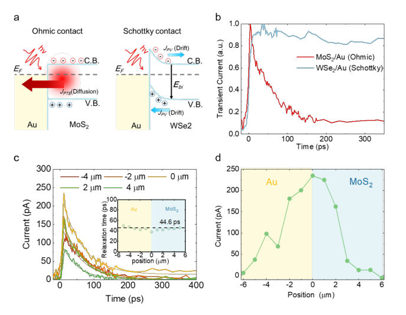
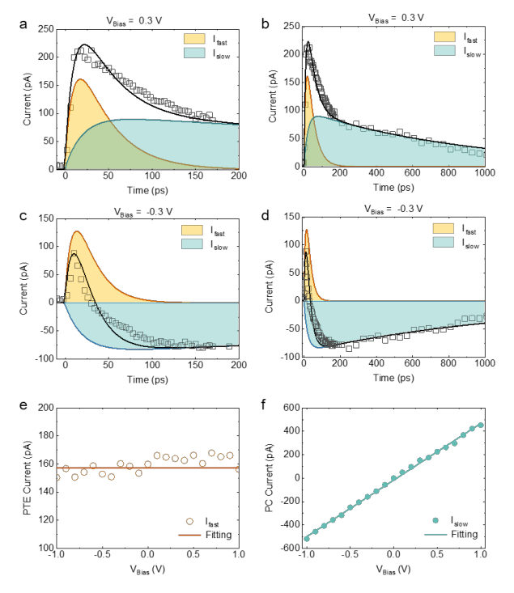

Summary. This work investigates the ultrafast speed limits in 2D TMDCs by using specialized zero-bias terahertz sampling. The authors demonstrate that the rapid carrier response is not limited by conventional drift but by hot-carrier super-diffusion, which is ultimately governed by the intrinsic phonon bottleneck. This establishes phonon engineering as a key paradigm for designing faster, self-powered optoelectronic devices.
Why it may be interesting. While focused on solid-state electronics, the explicit identification of the phonon bottleneck as the rate-limiting step for non-equilibrium carrier dynamics provides a direct, measurable link between lattice vibrations and device performance, relevant to open quantum system modeling.
Main problem. The operational speed of 2D TMDCs for optoelectronics is limited by low room-temperature mobilities and carrier transit delays.
Main result. The ultrafast response is governed by hot-carrier super-diffusion, which is quantitatively synchronized with the intrinsic optical-to-acoustic phonon scattering lifetime (phonon bottleneck).
Method. The study uses on-chip terahertz optoelectronic sampling at zero bias to measure intrinsic photoresponse, complemented by ultrafast pump-probe spectroscopy.
Model / system. The system involves 2D TMDCs ($ ext{MoS}_2$, $ ext{MoSe}_2$) interfaced with metal contacts, studied under zero-bias conditions to isolate intrinsic carrier dynamics from drift-limited transport.
Key observables. Ultrafast relaxation lifetimes (e.g., $48.5 ext{ ps}$ in $ ext{MoS}_2/ ext{Au}$), intrinsic $3 ext{-dB}$ bandwidths, and the quantitative correlation between electrical lifetime and phonon scattering lifetime.
Important parameters / regimes. Zero bias ($ ext{V}_{ ext{bias}} = 0 ext{ V}$), ultrafast timescales ($ ext{ps}$), and the phonon scattering rate.
Assumptions / limitations. The measurement setup successfully eliminates external parasitic delays and electric-field-driven drift by using Ohmic contacts and zero bias.
Figures summary. Figures illustrate time-resolved photocurrents, comparing Ohmic vs. Schottky contacts, showing position and bias independence of the fast decay component, and correlating optical phonon lifetimes with macroscopic electrical relaxation times.
Paper structure. The paper establishes the limitations of TMDCs, details the specialized zero-bias measurement platform, presents evidence ruling out drift-limited transport (via Ohmic/Schottky comparison), identifies hot-carrier super-diffusion, and finally links the macroscopic speed limit to the microscopic phonon bottleneck.
Two-dimensional transition metal dichalcogenides (TMDCs) are promising for low-power optoelectronics, yet their operational speed is widely considered constrained by low room-temperature mobilities and carrier transit delays. Here, by combining on-chip terahertz optoelectronic sampling with thermally evaporated Ohmic contacts, we eliminate external parasitic delays and directly capture the intrinsic interfacial photoresponse in unencapsulated TMDCs under zero bias. The devices achieve ultrafast relaxation lifetimes of 48.5 ps in MoS2/Au and 14.2 ps in MoSe2/Ag, translating to intrinsic 3-dB bandwidths of 4.4 GHz and 7.5 GHz, respectively. Spatial scanning and bias-dependent measurements show that this response is position-independent and bias-immune, ruling out conventional drift-limited transport and identifying hot-carrier super-diffusion driven by an interfacial electron temperature gradient as the operative mechanism. Furthermore, ultrafast pump-probe spectroscopy reveals that the macroscopic response time is quantitatively synchronized with the microscopic optical-to-acoustic phonon scattering lifetime governed by the intrinsic phonon bottleneck. Our findings establish phonon engineering as a viable paradigm to tailor non-equilibrium optoelectronic dynamics, offering a blueprint for zero-bias, ultrafast, self-powered devices.
Authors: Natalya A. Zimbovskaya
Type: theory · Category: other · PDF: https://arxiv.org/pdf/2609.09581v1
Analysis basis: full PDF text, analyzed in chunks
Topic relevance: Keldysh / 2PI / non-Gaussian methods 1/5 · correlated / nonlocal dissipation 1/5 · driven-dissipative phase transition 1/5 · methods for driven-dissipative 1/5
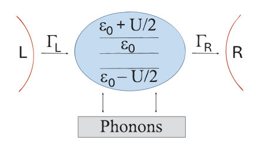

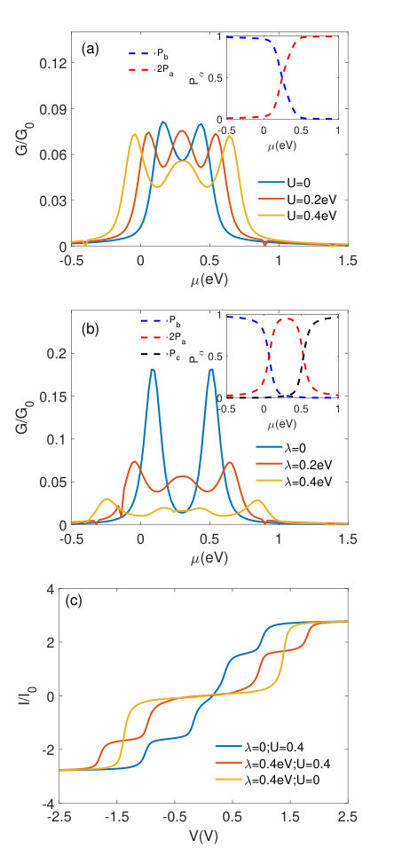
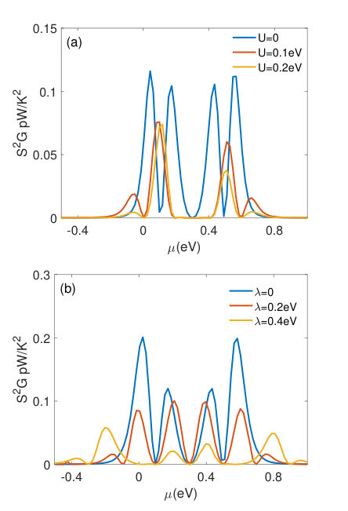
Summary. This theoretical study models electron transport through molecular junctions, focusing on how Coulomb interactions and solvent reorganization affect thermoelectric performance. The research shows that these two effects interact non-trivially, leading to significant, sometimes counteracting, changes in measurable quantities like the Seebeck coefficient and power factor. It provides a detailed theoretical framework for understanding energy conversion in nanoscale molecular devices.
Why it may be interesting. This work bridges molecular electronics, open quantum systems, and many-body physics by explicitly modeling the interplay between electronic correlations (Coulomb blockade) and environmental coupling (electron-phonon coupling), which is crucial for understanding energy conversion at nanoscale interfaces.
Main problem. The study investigates how Coulomb interactions affect the thermoelectric properties of molecular junctions when electron transport is strongly influenced by thermalized phonon modes.
Main result. The combined effects of electron-electron interactions and solvent reorganization can cause qualitative changes in the Seebeck coefficient and power factor, with interactions potentially counteracting reorganization effects.
Method. The authors use a theoretical rate equation approach to calculate steady-state currents and linear response coefficients for thermoelectric properties.
Model / system. The model describes a single molecular junction (SMJ) bridged between electrodes and immersed in a dielectric solvent, incorporating molecular states, charging energy (Coulomb interaction U), and solvent reorganization energy (lambda).
Key observables. Seebeck coefficient (S), power factor (S^2G), zero-bias conductance (G), and charge current (I_ss).
Important parameters / regimes. Charging energy (U), reorganization energy (lambda), and bias/thermal voltage (V, T).
Assumptions / limitations. The analysis is performed in the linear transport regime ($\Delta V, \Delta T$ small), and the solvent reorganization is assumed to occur only during electron transfer.
Figures summary. Figures illustrate the dependence of conductance (G) on Coulomb interaction (U) and reorganization energy (lambda), showing up to four conduction maxima, and demonstrate how the thermopower (S) and power factor (S^2G) change sign and magnitude.
Paper structure. The paper develops the model using rate equations to find steady-state probabilities, derives expressions for current and thermoelectric coefficients, and then analyzes the resulting behavior of G, S, and S^2G under varying interaction strengths.
We present a theoretical study focused on the influence of Coulomb interactions on thermoelectric properties of molecular junctions assuming that electron transport is strongly affected by thermalized phonon modes in the molecular ambient. It is shown that the combined effect of Coulomb interactions between electrons on the molecular states and the reorganization processes in the ambient may significantly affect both Seebeck coefficient and the power factor. Specifically, we show that electron-electron interactions may counter-balance the effect of the ambient molecules reorganizations resulting in qualitative changes in the behavior of both zero-bias conductance and thermopower.
Authors: Prakitr Srisuma, Peter Hou, Shashank Venkat Muddu, Neda Nazemifard, Allan S. Myerson, Richard D. Braatz
Type: both · Category: other · PDF: https://arxiv.org/pdf/2609.10256v1
Analysis basis: full PDF text, analyzed in chunks
Topic relevance: Keldysh / 2PI / non-Gaussian methods 1/5 · analog quantum simulation 1/5 · methods for driven-dissipative 1/5

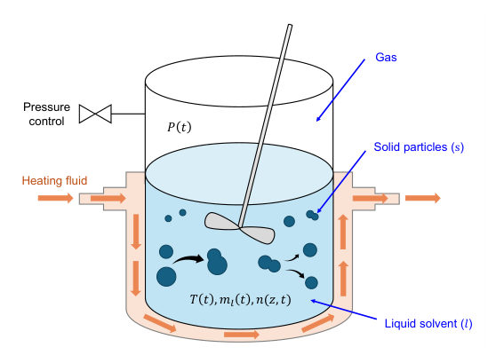
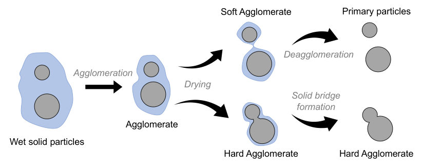


Summary. This paper presents a sophisticated, integrated model combining Population Balance Modeling with multiphysics simulation to predict particle agglomeration in agitated filter dryers used for drug manufacturing. By distinguishing between soft and hard agglomerates, the framework allows engineers to rationally design and operate the drying process to maintain high product quality and reliability.
Why it may be interesting. While the application is chemical engineering, the rigorous coupling of population dynamics (PBM) with coupled transport phenomena (heat/mass transfer) and kinetic rate laws shares mathematical formalism with modeling complex non-equilibrium systems in condensed matter physics.
Main problem. The primary challenge addressed is predicting and mitigating undesired hard agglomeration of small molecules during the critical agitated filter drying (AFD) process in pharmaceutical manufacturing.
Main result. The developed model successfully predicts the evolution of particle size distribution (PSD) and quantifies the impact of agglomeration, showing that process parameters like mass transfer rates can be tuned to minimize hard agglomerate formation.
Method. The study employs a novel mechanistic model that couples Population Balance Modeling (PBM) with multiphysics simulations to track heat, mass, and particle size changes simultaneously.
Model / system. The physical system is an Agitated Filter Dryer (AFD) used for drying Active Pharmaceutical Ingredients (APIs). The model integrates energy and mass balances with PBM to account for soft and hard agglomeration/breakage kinetics.
Key observables. Product temperature, moisture content, particle size distribution (PSD), and the quantification of soft vs. hard agglomerates.
Important parameters / regimes. Solubility, mass transfer rates, and the ratio of liquid evaporation rate to solid growth rate govern the agglomeration kinetics.
Assumptions / limitations. The system is assumed to be well-mixed due to continuous agitation, and the model explicitly distinguishes between soft (liquid bridge) and hard (solid bridge) agglomerates.
Figures summary. Figures illustrate the AFD experimental setup, the mechanistic model components (heat/mass transfer, PBM), and the time evolution of particle size percentiles (D90, D99) under different conditions.
Paper structure. The paper introduces the problem of agglomeration in AFDs, presents the coupled PBM/multiphysics framework (including energy/mass balances and specific kinetic terms for agglomeration/breakage), validates the model against experimental data (both limiting and practical cases), and concludes with parametric studies for process optimization.
Agitated filter dryers (AFDs) are a crucial unit operation in small molecule manufacturing that enables simultaneous filtration, washing, and drying of active pharmaceutical ingredients. One of the key challenges in AFDs is associated with undesired agglomeration, where the presence of hard agglomerates results in off-spec products, equipment damage, and additional downstream processing. This article presents a novel mechanistic model that describes the formation of soft and hard agglomerates during agitated filter drying. By integrating population balance and multiphysics modeling, the model can accurately predict the evolution of the product temperature, moisture content, and particle size distribution, and hence quantify the extend and impact of undesired agglomeration across various operating conditions. Our proposed model-based framework enables the rational design and operation of AFDs for improving the product quality and process reliability.
Authors: Somayyeh Alidoust, V. Ongun Özçelik
Type: theory · Category: other · PDF: https://arxiv.org/pdf/2609.09566v1
Analysis basis: full PDF text, analyzed in chunks
Topic relevance: Keldysh / 2PI / non-Gaussian methods 1/5


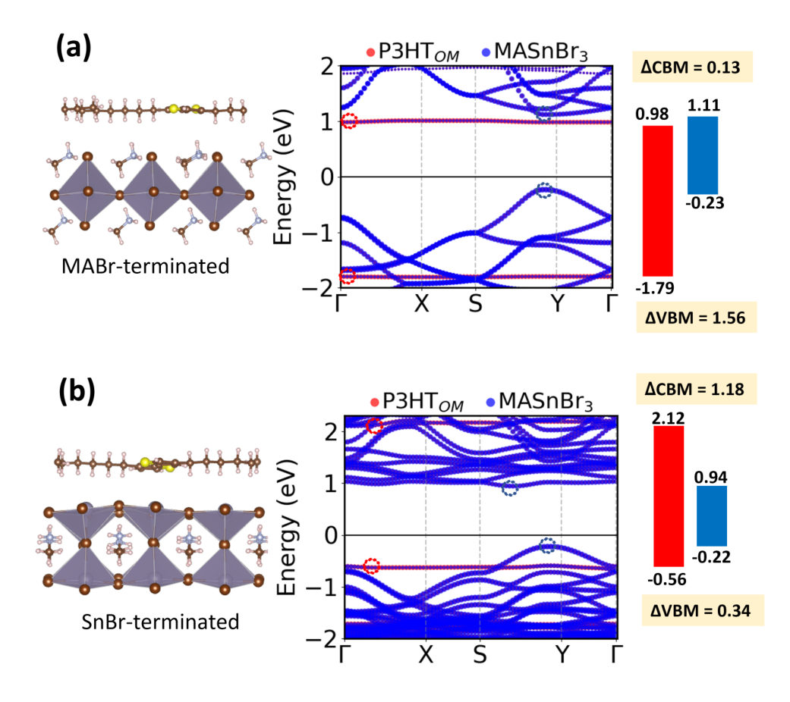

Summary. This work uses first-principles calculations to map the band alignment in P3HT/perovskite heterostructures, revealing that surface termination and cation mixing are critical design parameters. The findings establish that mixed-cation perovskites can maintain a desirable Type-I alignment, offering new principles for engineering organic-inorganic interfaces for energy applications.
Why it may be interesting. While focused on solid-state optoelectronics, the rigorous application of first-principles methods to map out complex, tunable interfacial electronic states (band alignment) is relevant to understanding engineered quantum interfaces in general.
Main problem. The study aims to understand how the chemical composition and surface termination of metal halide perovskites influence the band alignment when forming heterostructures with P3HT polymers.
Main result. The mixed-cation perovskite CsMASnBr3 uniquely forms a Type-I band alignment with P3HT regardless of surface termination, whereas pure Sn-based perovskites show termination-dependent alignment changes.
Method. The research employs high-throughput first-principles calculations using DFT (PBE functional with DFT-D3 corrections) and HSE06 for electronic structure analysis.
Model / system. The system modeled is the interface between P3HT variants and various metal halide perovskites (conventional and mixed-cation). Calculations are performed on slab models to simulate different surface terminations.
Key observables. Band alignment type (Type-I, II, III), Valence Band Maximum (VBM), Conduction Band Minimum (CBM), and band offsets ($\Delta ext{CBM}$, $\Delta ext{VBM}$).
Important parameters / regimes. Composition (e.g., CsMASnBr3 vs. CsSnBr3), surface termination ($ ext{AX}$ vs. $ ext{BX}$), and the polymer type (P3HT variants).
Assumptions / limitations. The primary assumption is that band alignment is governed by orbital coupling and carrier confinement rather than significant net charge transfer, although the dependence on termination is highly sensitive.
Figures summary. Figures illustrate crystal structures, band alignment heatmaps for 820 heterostructures, and detailed projected band structures comparing different terminations for specific Sn-based perovskite/P3HT interfaces.
Paper structure. The paper systematically analyzes the effect of composition and termination on band alignment using high-throughput calculations, contrasting the behavior of pure vs. mixed-cation perovskites, and detailing the mechanism of band offset formation.
Hybrid organic-inorganic perovskite heterostructures are emerging platforms for energy conversion and optoelectronic devices, yet the effects of composition and surface terminations on band alignment remain poorly understood. Here, using high-throughput first-principles calculations, we systematically reveal the effect of composition and surface termination on the band alignment of 820 heterostructures formed between poly(3-hexylthiophene) (P3HT) variants and conventional and mixed-cation metal halide perovskites. Band edge analysis predicts concentration dependent band alignments, with most Pb and Sn based perovskites exhibiting Type II and III behavior while mixed-cation CsMASnBr3 uniquely forms Type-I junctions with all P3HT variants. Explicit interface calculations reveal that surface termination can reverse the predicted alignment in conventional tin perovskites, while the mixed cation perovskite preserves Type-I alignment with P3HT regardless of termination. Despite negligible charge transfer, termination dependent band offsets produce markedly different carrier confinement, establishing design principles for engineering P3HT/perovskite interfaces.
Authors: Yingnan Liu, Yan Liu, Renyu Duan, Menghui Wang, Meiling Xu, Hanyu Liu, Shoutao Zhang
Type: theory · Category: strongly correlated electrons · PDF: https://arxiv.org/pdf/2609.09730v1
Analysis basis: full PDF text, analyzed in chunks
Topic relevance: Keldysh / 2PI / non-Gaussian methods 1/5


Summary. This theoretical study predicts that tetralayer kagome borophene (TKB) is a record-high-temperature elemental superconductor with $T_c=102$ K. The superconductivity arises from a unique out-of-plane pairing mechanism involving $s$-$p_z$ bonding states coupled to low-frequency boron vibrations. The work establishes covalent stacking engineering as a viable pathway for high-$T_c$ materials in 2D systems.
Why it may be interesting. While focused on BCS-like pairing, the emphasis on strong coupling ($\lambda=1.78$) and the detailed orbital/momentum dependence of the pairing mechanism provides insights into how electronic structure dictates pairing symmetry, relevant for understanding correlated electron behavior.
Main problem. The primary challenge is achieving high-temperature superconductivity in two-dimensional elemental crystals, where insufficient electron-phonon coupling (EPC) usually limits $T_c$.
Main result. The authors predict that tetralayer kagome borophene (TKB) can be a record-high-$T_c$ elemental superconductor with a critical temperature of 102 K.
Method. The study employs first-principles calculations combined with the fully anisotropic Migdal-Eliashberg theory to model the superconducting pairing mechanism.
Model / system. The physical system is Tetralayer Kagome Borophene (TKB) stabilized by ABAB covalent stacking. The theory focuses on the electron-phonon coupling mediated by out-of-plane $s$-$p_z$ bonding states interacting with low-frequency out-of-plane boron vibrations.
Key observables. Predicted critical temperature ($T_c \approx 102$ K), superconducting gap ($\Delta_{nk}$), and momentum-dependent EPC strength ($\lambda_{nk}$).
Important parameters / regimes. The optimal structure is TKB, which exhibits strong coupling ($\lambda = 1.78$) and is stabilized by the ABAB stacking.
Assumptions / limitations. The analysis relies on first-principles calculations and the Migdal-Eliashberg theory; the intrinsic properties are assumed, suggesting exfoliation is necessary for measurement.
Figures summary. Figures illustrate the TKB structure, orbital-resolved band structures, pCOHP analysis confirming OOP bonding, and phonon dispersion weighted by EPC strength, showing strong coupling at low frequencies.
Paper structure. The paper progresses from identifying the general problem in 2D elemental superconductors to proposing TKB, detailing the electronic structure and bonding mechanism, and finally calculating the record-high $T_c$ using advanced Eliashberg theory.
Superconductivity above the liquid-nitrogen temperature remains rare in two-dimensional elemental crystals, where strong covalent bonding often yields high phonon frequencies but insufficient electron-phonon coupling. Here, using first-principles calculations and fully anisotropic Migdal-Eliashberg theory, we predict tetralayer kagome borophene (TKB) stabilized by ABAB covalent stacking, as a liquid-nitrogen-temperature elemental superconductor. With a predicted critical temperature of 102 K, TKB sets a record-high value among previously reported elemental superconductors. Unlike known high-Tc boron-based superconductors dominated by in-plane sigma-bonding states and high-frequency in-plane B-B stretching modes, TKB realizes an out-of-plane s-pz-bonding-mediated pairing mechanism, in which interlayer s-pz bonding states at the Fermi level are strongly coupled to low-frequency out-of-plane vibrations of boron atoms. These results reveal a distinct out-of-plane pairing channel in multilayer borophene and establish covalent stacking engineering as a potential route for high-Tc superconductivity in two-dimensional materials.
Authors: Ken Shiozaki
Type: theory · Category: other · PDF: https://arxiv.org/pdf/2609.09723v1
Analysis basis: full PDF text, analyzed in chunks
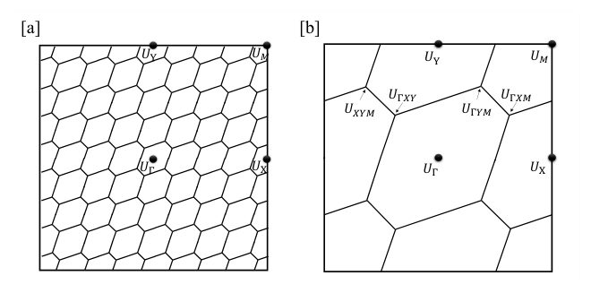


Summary. This paper introduces a novel, discrete topological invariant for 2D spinful insulators with $\text{C}_2\text{T}$ symmetry. By adapting the Stiefel-Whitney construction, the authors derive a formula that is proven to be gauge-invariant and additive. This new invariant, when combined with other known indices, completes the stable topological classification for this class of materials.
Why it may be interesting. This work provides a powerful, symmetry-protected tool for classifying topological phases in condensed matter systems, extending the classification scheme beyond what standard indices can capture.
Main problem. The paper aims to derive and prove the gauge invariance and additivity of a discrete, additional $\mathbb{Z}_2$ topological invariant for two-dimensional spinful insulators possessing twofold rotation and time-reversal symmetries.
Main result. The derived invariant, $\nu_{\text{C}_2\text{T}}[\alpha]$, successfully labels the stable topological classification of these insulators, complementing existing indices like the Kane-Mele index.
Method. The invariant is formulated using the second Stiefel-Whitney number derived from a real bundle over the quotient of the Brillouin torus, $T^2/\text{C}_2$. The calculation involves discrete formulas using overlaps of Bloch frames.
Model / system. The study focuses on two-dimensional spinful insulators characterized by $\text{C}_2\text{T}$ symmetry, specifically within the layer group $p1121'$. Models include atomic insulators and specific band insulator Hamiltonians.
Key observables. The primary observable is the discrete invariant $\nu_{\text{C}_2\text{T}}[\alpha]$, alongside one-dimensional partial polarizations and the filling number.
Important parameters / regimes. The classification is determined by the combination of the new invariant and three quantized $\mathbb{Z}_2$ partial polarizations, leading to a total classification of $\mathbb{Z} \oplus \mathbb{Z} \oplus 4/2$.
Assumptions / limitations. The derivation assumes the existence of a spectral gap ($\Delta E > 0$) and relies on defining the invariant via a singular gauge transformation.
Figures summary. The notes mention a comparison table (Table 2) showing the computed values of the invariant for various atomic insulators and TI models, confirming consistency across different mesh sizes.
Paper structure. The paper reviews existing invariants (SW classes, Kane-Mele index), introduces the $\text{C}_2$-equivariant refinement of the SW construction, derives the discrete formula using Bloch frame overlaps, proves its gauge invariance and additivity, and finally applies it to classify known topological phases.
We review Stiefel--Whitney invariants and give a discrete formulation of an additional $\mathbb{Z}_2$ invariant for two-dimensional spinful insulators with twofold rotation and time-reversal symmetries (layer group $p1121'$). A singular gauge transformation specifies a real bundle over the quotient of the Brillouin torus, whose second Stiefel--Whitney number defines the invariant. We derive its dependence on the choice of auxiliary gauge function and prove invariance under changes of Bloch frame and additivity under direct sums. The discrete formula uses overlaps of independently chosen Bloch frames and symmetry-compatible $\mathrm{Pin}_+$ lifts on the boundary of a half Brillouin zone. Atomic and topological-insulator models illustrate the formula and distinguish the additional invariant from the Kane--Mele index. Together with three quantized $\mathbb{Z}_2$ partial polarizations and the filling number, it labels the known stable classification $\mathbb{Z}\oplus\mathbb{Z}_2^{\oplus 4}$.
Authors: Lerato Takana, Katya Mikhailova, Junwei Tong, Xiangcheng Liu, Kwangyul Hu, Juan Hofer, Guanxiong Qu, Clare Yu, Ivan Schuller, Michael Flatté, Xiaoqin Li, Yuri Suzuki
Type: both · Category: other · PDF: https://arxiv.org/pdf/2609.09674v1
Analysis basis: full PDF text, analyzed in chunks
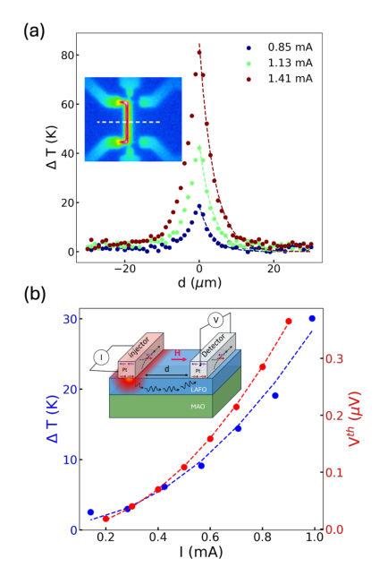
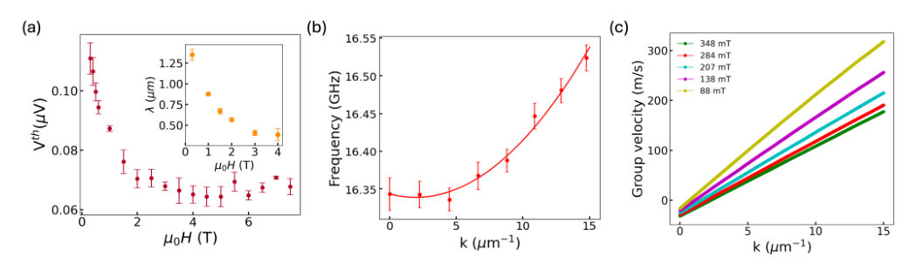
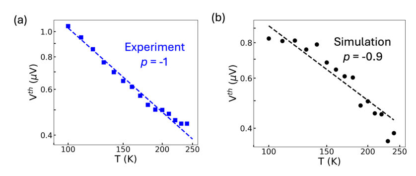
Summary. This paper investigates how heat drives spin transport via magnons in ferrimagnetic thin films. By combining nonlocal electrical measurements with spectroscopic techniques and simulations, the authors show that transport is governed not just by magnon density, but critically by the magnon group velocity and the temperature dependence of the exchange stiffness. This provides a fundamental microscopic understanding for engineering heat-driven spin currents.
Why it may be interesting. The work provides a detailed, quantitative link between macroscopic transport measurements (nonlocal voltage) and microscopic parameters (group velocity, exchange stiffness) in magnetic materials, which is relevant for understanding energy dissipation in quantum magnetic systems.
Main problem. The paper aims to resolve the poorly understood microscopic mechanisms governing heat-driven spin transport via magnons in magnetic insulators.
Main result. Thermal magnon transport is found to be suppressed by magnetic fields and decreases with temperature, with the governing physics being dictated by the magnon group velocity and temperature-dependent exchange stiffness.
Method. The study combines nonlocal spin Seebeck measurements, Brillouin Light Scattering (BLS) spectroscopy, and micromagnetic simulations to probe the underlying physics.
Model / system. The research focuses on low-damping ferrimagnetic thin films, specifically Li0.5Al1.0Fe1.5O4/Pt nanodevices, using a nonlocal spin Seebeck geometry.
Key observables. Thermal magnon voltage (Vth), magnon spin diffusion length, magnon group velocity (vg), and temperature dependence of the signal.
Important parameters / regimes. Magnetic field strength, temperature (T), and the exchange stiffness (A_ex).
Assumptions / limitations. The nonlocal measurement setup successfully separates intrinsic magnon transport from local thermoelectric effects by placing the detector outside the thermal healing length.
Figures summary. Figures illustrate the nonlocal voltage scaling with current and temperature gradient, the suppression of Vth and spin diffusion length with magnetic field, and the relationship between field/temperature and the magnon group velocity.
Paper structure. The paper establishes the experimental setup using nonlocal measurements, analyzes the field dependence by linking Vth suppression to reduced magnon group velocity (measured by BLS), and finally addresses the temperature dependence by showing that simulations incorporating temperature-dependent exchange stiffness reproduce the observed power-law decay.
Thermally generated magnons enable heat-driven spin transport in magnetic insulators, yet the microscopic mechanisms governing their propagation remain poorly understood. Here, we investigate thermal magnon transport in low-damping Li$_{0.5}$Al$_{1.0}$Fe$_{1.5}$O$_4$/Pt nanodevices using a nonlocal spin Seebeck geometry that separates magnon transport from local thermoelectric effects. Thermal imaging establishes a detector region outside the thermal healing length, enabling intrinsic nonlocal measurements. We find that thermal magnon transport is strongly suppressed by magnetic fields far above saturation. Brillouin light scattering reveals that increasing field reduces the group velocity of backward volume magnons, providing a microscopic origin for the observed reduction in magnon spin diffusion length. We further find that thermal magnon transport decreases with increasing temperature despite an increasing magnon population. Micromagnetic simulations reproduce this behavior only when a temperature-dependent exchange stiffness is included. These results identify magnon group velocity and exchange stiffness as key parameters governing thermal magnon transport in ferrimagnetic thin films.
Authors: Zhuocheng Lu, Zhichao Guo, Yuanyuan Xua, Jiacheng Yao, Hua Wang
Type: theory · Category: other · PDF: https://arxiv.org/pdf/2609.10411v1
Analysis basis: full PDF text, analyzed in chunks


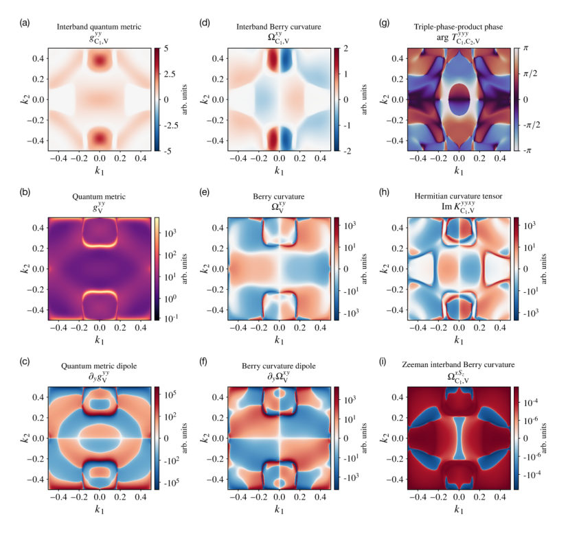
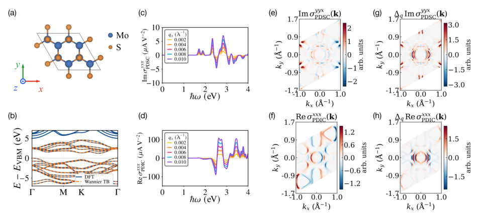

Summary. This paper presents WannierNLQG, a new Julia package designed to compute nonlinear optical responses and quantum geometric quantities from Wannier tight-binding models. It provides a unified, gauge-consistent framework that handles complex issues like degeneracy and finite momentum transfer. This tool enables first-principles calculations crucial for designing next-generation optoelectronic and spintronic materials.
Why it may be interesting. The focus on nonlinear optical responses and quantum geometry connects directly to advanced topics in quantum optics and open quantum systems, particularly in understanding light-matter interactions in solid-state materials.
Main problem. The central problem is the theoretical and computational challenge of understanding the deep interplay between nonlinear optical responses and quantum geometry in modern condensed matter systems.
Main result. The authors introduce WannierNLQG, a Julia framework capable of calculating these quantities from Wannier tight-binding models with high accuracy and efficiency.
Method. The framework uses Wannier interpolation from first-principles structures, implementing gauge-consistent and degeneracy-aware methods for calculating various currents and geometric tensors.
Model / system. The calculations are performed on electronic systems modeled by Wannier tight-binding Hamiltonians, applicable to materials like GeS and bilayer MoS2.
Key observables. Ordinary, spin, and photon-drag injection and shift currents; k-resolved Berry curvature, quantum metric, and higher-order quantum geometric tensors.
Important parameters / regimes. Finite momentum transfer (q), arbitrary perturbative order, and symmetry-adapted k-point meshes.
Assumptions / limitations. The framework assumes the applicability of Wannier interpolation and aims to overcome limitations in handling gauge-invariance and degenerate subspaces inherent in older methods.
Figures summary. Figure 1 illustrates the computational workflow, showing the progression from model preparation through response setup to final Brillouin-Zone calculations, including symmetry reduction.
Paper structure. The paper introduces the WannierNLQG framework, details its capabilities for calculating nonlinear responses (shift/injection currents) and quantum geometry (Berry curvature, metric), and validates its performance through case studies comparing it to existing methods.
Nonlinear optical responses and quantum geometry are central to modern condensed matter physics and are deeply intertwined. We introduce WannierNLQG, an extensible Julia framework for computing nonlinear optical responses and quantum geometric quantities from Wannier tight-binding models. Its gauge-consistent, degeneracy-aware architecture accommodates perturbative responses at arbitrary order and additional quantum geometric quantities. The current release evaluates ordinary, spin, and photon-drag injection and shift currents, as Brillouin-zone integrals and on k slices. For shift current, a unified interface exposes four complementary formulations: the conventional method, projector trace, generalized Wilson loop, and a finite-momentum geometric loop, with the last three explicitly accommodating degenerate subspaces. The framework also provides k-resolved Berry curvature, quantum metric, their multipoles, and additional quantum geometric and mixed momentum-spin quantities. Experimental symmetry workflows additionally support symmetry-adapted Wannier construction, symmetrization of tight-binding models and real-space operators, and reduction of spatially uniform response integrals to irreducible k-point orbits and invariant tensor components. The documentation covers formula conventions, the TaskConfig interface, and auditable output formats, with GeS and bilayer MoS2 case studies illustrating method comparison, degeneracy handling, quantum geometric analysis, and photon-drag responses. Together, these capabilities enable first-principles calculations of nonlinear response and quantum geometry in realistic multiband materials, connecting quantum geometry with quantitative materials modeling for optoelectronic, spintronic, and photovoltaic applications.